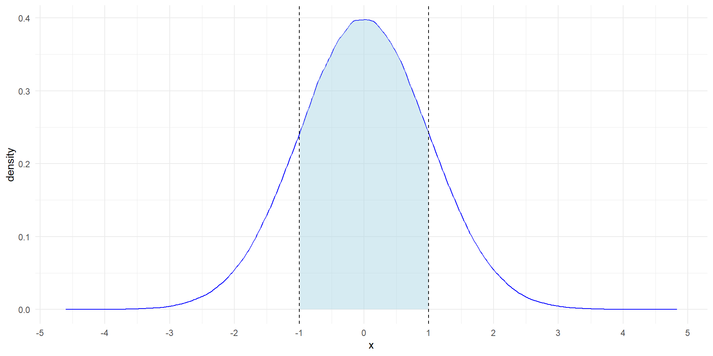
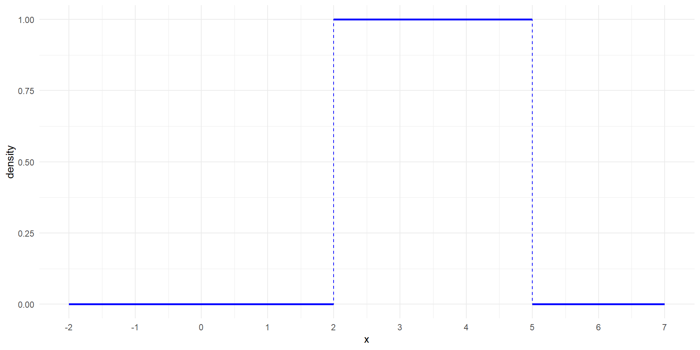
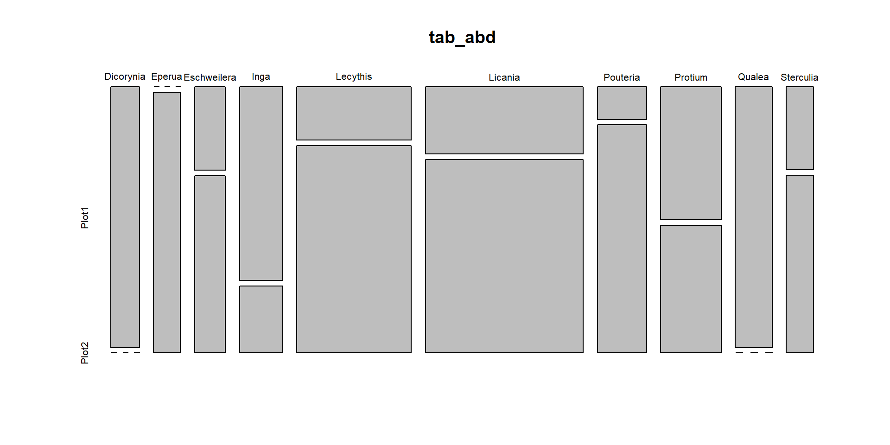
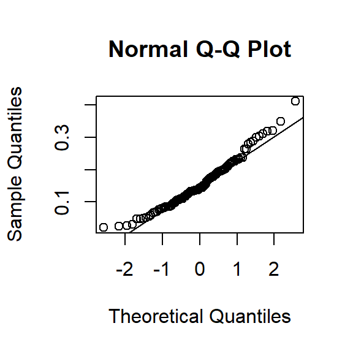
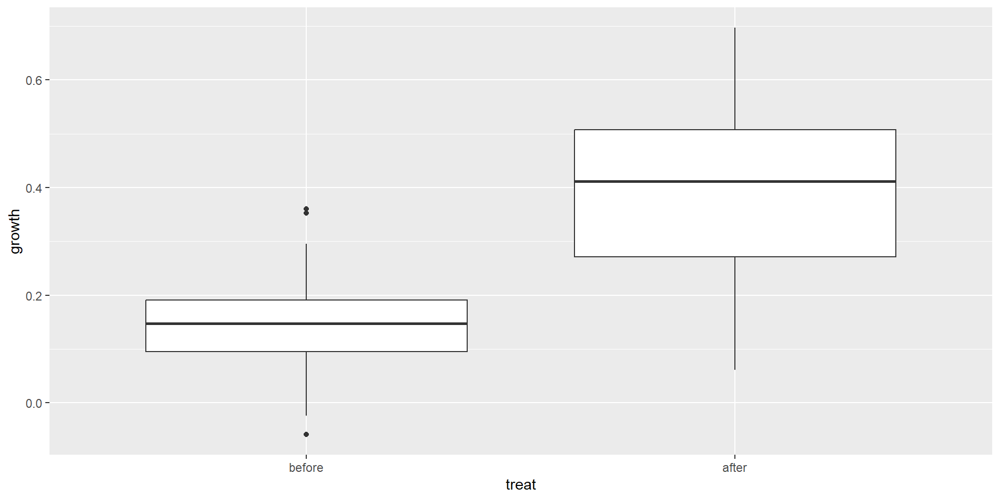
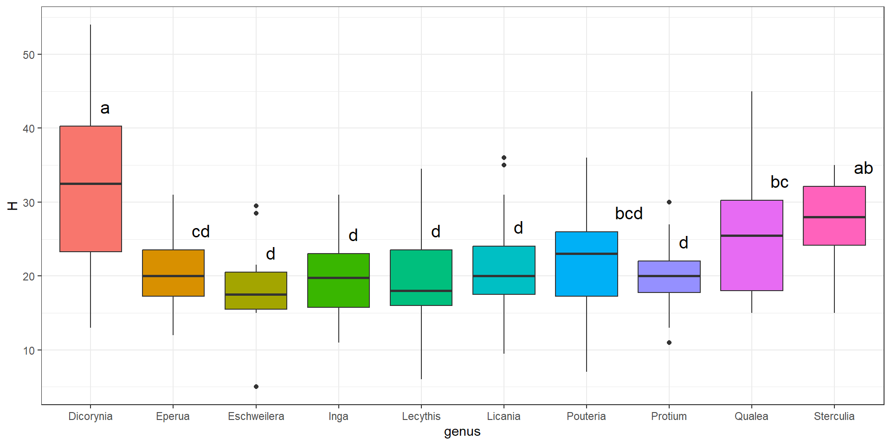

Statistics with R - Distributions and hypothesis testing
Cirad - UnB
2026-09-22
Let’s load the packages that we will use today
Univariate statistics
Reminder on the descriptive statistics
For a categorical variable:
Occurrence (count or proportion) per categories
visualisation: barplot, Cleveland plot
Reminder on the descriptive statistics
For a quantitative (numerical) variable:
measure of centrality: mean, median
measure of dispersion: max-min, variance, standard deviation, interquartile distance, coefficient of variation
visualisation: histogram, boxplot, density plot
Reminder on the descriptive statistics
The coefficient of variation (CV) is a standardised measure of dispersion, that can be used to compared the dispersion of variables measured in different scale:
\[CV = \frac{standard\:deviation}{mean}\]
Descriptive statistics vs parameters
Descriptive statistics are calculated from the observations (the data).
eg: The trees that we can measure in a forest plot are a sample of the population of the trees in the considered forest. We can calculate the mean diameter of this sample.
The observations are a sample of a theoretical population that we don’t measure. The theoretical population can be described by its parameters, that are not measured.
eg: The mean diameter of the population of trees in the considered forest is a parameter. It cannot be measured but can be estimated.
Statistical distributions
We can use statistical distributions to represent the distribution of the values of the variable in the theoretical population.
A statistical distribution (also called probability law) is a function that associates a probability with each possible value of a random variable.
Statistical distributions
We can visualise a distribution density function (also called density of probability) with a density plot:

Here, the probability that \(x \in [-1, 1]\) is equal to the blue area, which is the integral of the density function between -1 and 1.
Uniform distribution
\[\mathcal{U}(a, b)\]
\(a\) and \(b\) are the two parameters of an uniform distribution. \([a, b]\) is the range of possible values (so a is the minimum value and b the maximum value)
e.g. for \(\mathcal{U}(2, 5)\)

Uniform distribution
We use the function runif to randomly draw data from a uniform distribution:
[1] 3.114180 4.244543 4.658490 3.817215 3.714333 3.489043 3.494237 2.463896
[9] 2.395771 3.943445NB: as we do a random draw, we get different values each time we run the command:
Law of large numbers
The larger the size of the random sample, the closer the distribution of observed values is to the distribution of the theoretical population.
Normal distribution
\[\mathcal{N}(\mu, \sigma^2)\] The two parameters of a normal distribution are:
\(\mu\) is the mean
\(\sigma^2 > 0\) is the variance, so \(\sigma\) is the standard deviation
💡 The normal distribution is also called Gaussian distribution.
Normal distribution
We use the function rnorm to randomly draw data from a normal distribution:
dt1 <- data.frame(x = rnorm(n = 100000,
mean = 0,
sd = 1))
dt2 <- data.frame(x = rnorm(n = 100000,
mean = 4,
sd = 0.5))
dt3 <- data.frame(x = rnorm(n = 100000,
mean = -2,
sd = 4))
g <- ggplot() +
geom_density(data = dt1, aes(x = x),
color = "blue") +
geom_density(data = dt2, aes(x = x),
color = "green") +
geom_density(data = dt3, aes(x = x),
color = "red") +
theme_minimal()Centred reduced normal distribution
If \(x \sim \mathcal{N}(\mu, \sigma^2)\)
then \(z = \frac{x - \mu}{\sigma}\) follows a centred reduced normal distribution:
\(z \sim \mathcal{N}(0, 1)\)
💡 When two variables are measured in different scales, it can be usefull to standardise them by centring and reducing them, to be able to compare them.
QQ-plot
A quantile-quantile plot is used to visualise the correspondence between two distributions by plotting each percentile of the two distributions.
This is very useful to visually assess if a variable is normally-distributed, by comparing its distribution to a normal distribution.
We use the function qqnorm to draw a normal QQ-plot:
Testing the association between two categorical variables: the \(\chi^2\) test
Let’s work with the the Nouragues tree data
Heights and diameters of trees in two 1-ha plots from the Nouragues forest (French Guiana)
Let’s load them:
# A tibble: 6 × 7
plotId genus species D H lat long
<chr> <chr> <chr> <dbl> <dbl> <dbl> <dbl>
1 Plot1 indet indet 11.5 12 4.07 -52.7
2 Plot1 Qualea rosea 11.6 16 4.07 -52.7
3 Plot1 Dicorynia guianensis 83.9 40 4.07 -52.7
4 Plot1 Protium cf_guianense 15 18 4.07 -52.7
5 Plot1 Ocotea guianensis 36.8 27 4.07 -52.7
6 Plot1 Cordia sagotii 13.5 20 4.07 -52.7Do the number of occurences of several genus depends on the plot?
We are going to work on the 10 most abundant genus in the Nouragues dataset, let’s select them:
# A tibble: 10 × 2
genus n
<chr> <int>
1 Licania 128
2 Lecythis 93
3 Protium 49
4 Pouteria 40
5 Inga 35
6 Qualea 30
7 Eschweilera 25
8 Dicorynia 23
9 Eperua 22
10 Sterculia 22Contingency table
Let’s start by doing a contingency table, using the function table.
This gives the number of observations for each pairs of categories.
Plot1 Plot2
Dicorynia 23 0
Eperua 0 22
Eschweilera 8 17
Inga 26 9
Lecythis 19 74
Licania 33 95
Pouteria 5 35
Protium 25 24
Qualea 30 0
Sterculia 7 15Percentages per category
We can look at the percentages per column (here the relative proportion of species in a given plot), using the function cprop of the package questionr:
Plot1 Plot2 All
Dicorynia 13.1 0.0 4.9
Eperua 0.0 7.6 4.7
Eschweilera 4.5 5.8 5.4
Inga 14.8 3.1 7.5
Lecythis 10.8 25.4 19.9
Licania 18.8 32.6 27.4
Pouteria 2.8 12.0 8.6
Protium 14.2 8.2 10.5
Qualea 17.0 0.0 6.4
Sterculia 4.0 5.2 4.7
Total 100.0 100.0 100.0⚠️ Here we look at the frequency per column because we are interested in the effect of the plot, and the plot is in column.
The function lprop also exists to look at frequency per row.
Graphical exploration
We can do a mosaic plot, using the function mosaicplot to explore the association graphically:

\(\chi^2\) test
We can then perform a \(\chi^2\) test, to test the independence of the two categorical variables.
H0: the variables are independent.
We use the function chisq.test on the contingency table (not on the percentage):
The result shows the following values:
X-squared is the value of the \(\chi^2\) statistics, which is a “distance” between the observed occurrences and the expected ones if the variables were independent.
df is the number of degrees of freedom
p-value is the probability to get such a X-squared value under the assumption of independence. Here the p-value is very low, so we can reject the null hypothesis of independence.
\(\chi^2\) test
The \(\chi^2\) needs to be done on contingency tables and not on proportions, as the size of the sample needs to be known.
It is less reliable if the sample size is too small. It should not be used if any of the expected frequency under H0 is below 5. Let’s check this:
Plot1 Plot2
Dicorynia 8.668094 14.33191
Eperua 8.291221 13.70878
Eschweilera 9.421842 15.57816
Inga 13.190578 21.80942
Lecythis 35.049251 57.95075
Licania 48.239829 79.76017
Pouteria 15.074946 24.92505
Protium 18.466809 30.53319
Qualea 11.306210 18.69379
Sterculia 8.291221 13.70878Residuals
We can look at the residuals (here the standardised residuals) using the function chisq.residuals of the package questionr:
Plot1 Plot2
Dicorynia 6.32 -6.32
Eperua -3.74 3.74
Eschweilera -0.60 0.60
Inga 4.65 -4.65
Lecythis -3.84 3.84
Licania -3.26 3.26
Pouteria -3.44 3.44
Protium 2.04 -2.04
Qualea 7.28 -7.28
Sterculia -0.58 0.58standardised residuals < -2 indicate under-representation
standardised residuals > 2 indicate over-representation
standardised residuals in [-2, 2] indicate no significant difference to independence
The threshold of 2 correspond to a 95% confidence interval.
Residuals
We can also present the residuals graphically with the argument shade = TRUE in the function mosaicplot:

Testing if two groups differ considering a quantitative variable: the t-test
Let’s work with the Nouragues tree data
We will focus on two genus: Dicorynia and Protium:
Do the two genus differ in height?
Let’s explore this graphically:

Are the distribution of height in both genus normal?
An assumption of the t-test is that the data are normally distributed.
To decide which test to use, we first check the normality of the distribution with a Shapiro-Wilk test, using the function shapiro.test
H0 of the Shapiro-Wilk test: the distribution is normal
The tests are non-significant, so they don’t reject the hypothesis of normality. We can consider the two distributions as normal.
Are the distribution of height in both genus normal?
We could also check the normality graphically with normal Q-Q plot:

The points fall reasonably on the diagonal line, we can consider the data as normally distributed.
t-test
As the two distributions are normal, we can do a t-test using the function t.test:
A t-test test the equality of means of two groups: H0: equality of the means
Welch Two Sample t-test
data: dt_sub$H by dt_sub$genus
t = 4.7119, df = 21.786, p-value = 0.0001086
alternative hypothesis: true difference in means between group Dicorynia and group Protium is not equal to 0
95 percent confidence interval:
6.675884 17.183090
sample estimates:
mean in group Dicorynia mean in group Protium
31.75000 19.82051 The result is significant, so we can reject the null hypothesis that the means of both groups are equal and conclude that the two genus differ in height.
💡 The result indicates that we performed a Welch t-test, which doesn’t assume homoscedasticity (equality of variance). If we want to run a t-test assuming homoscedasticity, we need to use the argument var.equal = TRUE.
Do the two genus differ in diameter?
Let’s explore this graphically:

Are the distribution of diameter in both genus normal?
Let’s first test if the distribution of diameters are normal:
The tests are significant, so they reject the hypothesis of normality.
Are the distribution of diameter in both genus normal?
This is how the QQ plots look:
The distributions of diameters are not normal, so we cannot use a t-test.
Wikcoxon rank test
We can do a Wilcoxon rank test, which is the non-parametric equivalent to the t-test, using the function wilcox.test:
Wilcoxon rank sum exact test
data: dt_sub$D by dt_sub$genus
W = 882, p-value = 6.977e-05
alternative hypothesis: true location shift is not equal to 0The result is significant, so we can reject the null hypothesis, and conclude that the two genus differ in diameter.
💡 A non-parametric test is a test that does not make any assumption regarding the distribution of the observations.
What if the data are paired?
Let’s load some data:(available here)
The data dt_thin is a dummy dataset of the growth (in cm DBH/year) of 100 tree before and after thinning.
tibble [200 × 3] (S3: tbl_df/tbl/data.frame)
$ treeID: Factor w/ 100 levels "1","2","3","4",..: 1 1 2 2 3 3 4 4 5 5 ...
$ treat : Factor w/ 2 levels "before","after": 1 2 1 2 1 2 1 2 1 2 ...
$ growth: num [1:200] 0.0487 0.4031 0.1384 0.356 0.185 ...These data are paired, as each individual tree is measured twice: before and after thinning.
Growth before and after thinning
Let’s explore the data graphically:

Growth before and after thinning
First, we pivot the data to a wide format:
# A tibble: 5 × 3
treeID before after
<fct> <dbl> <dbl>
1 1 0.0487 0.403
2 2 0.138 0.356
3 3 0.185 0.504
4 4 0.203 0.311
5 5 0.296 0.269Are the distributions normal?
Let’s check the normality graphically:
t-test for paired data
We can do a t-test for paired data by specifying paired = TRUE in the function t.test:
Paired t-test
data: dt_thin_w$before and dt_thin_w$after
t = -13.366, df = 99, p-value < 2.2e-16
alternative hypothesis: true mean difference is not equal to 0
95 percent confidence interval:
-0.2822526 -0.2092826
sample estimates:
mean difference
-0.2457676 The result is significant, so we can conclude that the growths before and after thinning differ.
💡 If the data are not normally distributed, we can do a Wikcoxon rank test for paired data in a similar way.
What to report for a t-test?
To retrieve the p-value:
[1] 6.719727e-24A significant p-value indicates that it is highly improbable to have the observed effect if the null hypothesis is true. So we can conclude that the two groups differ. ⚠️ However, this does not inform on the magnitude of the difference.
In addition to the p-value, we need to report:
Testing difference between more than two groups: the ANOVA
Analysis of variance: ANOVA
With the t-test, we tested the difference between two groups.
If we have more than two groups, we use the ANOVA.
The ANOVA compares the variation within groups with the variation between groups.
H0: all the observations come from populations with a same mean.
Do the height of several genus differ?
We extent the analysis done on Dicorynia and Protium to more genus: let’s consider the 10 more abundant genus.
Let’s start with a graphical exploration:
ANOVA
We perform the ANOVA using the function aov:
Df Sum Sq Mean Sq F value Pr(>F)
genus 9 4025 447.2 12.17 <2e-16 ***
Residuals 386 14183 36.7
---
Signif. codes: 0 '***' 0.001 '**' 0.01 '*' 0.05 '.' 0.1 ' ' 1
71 observations deleted due to missingnessThe test is significant, meaning that the groups differ.
Checking the model assumptions
The ANOVA assumes homoscedasticity, meaning a constant variance of residuals across groups.
We check this graphically by plotting the residuals against the fitted values (the estimated mean for each group):
Checking the model assumptions
The ANOVA assumes that the residuals are normally distributed.
We check this graphically with a Q-Q plot:
Estimated mean per group
To get the estimated mean of each group, we use the function coef:
(Intercept) genusEperua genusEschweilera genusInga
31.750000 -11.600000 -13.464286 -12.375000
genusLecythis genusLicania genusPouteria genusProtium
-12.412338 -10.844340 -9.564286 -11.929487
genusQualea genusSterculia
-6.303571 -4.638889 The intercept correspond to the first group (here Dicorynia).
The other coefficients show the difference of each group with the first group. For instance, the mean of Sterculia is:
Comparing the groups
We know that the means of the groups differ, but we also would like to know which groups significantly differ from the others.
We can perform a Tukey test, which compares all pairs of groups, using the function TukeyHSD:
Tukey multiple comparisons of means
95% family-wise confidence level
Fit: aov(formula = H ~ genus, data = dt_sub10)
$genus
diff lwr upr p adj
Eperua-Dicorynia -11.60000000 -17.7000462 -5.4999538 0.0000002
Eschweilera-Dicorynia -13.46428571 -19.4912748 -7.4372966 0.0000000
Inga-Dicorynia -12.37500000 -17.8735073 -6.8764927 0.0000000
Lecythis-Dicorynia -12.41233766 -17.2536002 -7.5710752 0.0000000
Licania-Dicorynia -10.84433962 -15.5470742 -6.1416051 0.0000000
Pouteria-Dicorynia -9.56428571 -14.9713988 -4.1571727 0.0000016
Protium-Dicorynia -11.92948718 -17.2348102 -6.6241642 0.0000000
Qualea-Dicorynia -6.30357143 -11.9511168 -0.6560261 0.0154449
Sterculia-Dicorynia -4.63888889 -10.9060906 1.6283128 0.3559054
Eschweilera-Eperua -1.86428571 -7.8912748 4.1627034 0.9930111
Inga-Eperua -0.77500000 -6.2735073 4.7235073 0.9999883
Lecythis-Eperua -0.81233766 -5.6536002 4.0289248 0.9999481
Licania-Eperua 0.75566038 -3.9470742 5.4583949 0.9999641
Pouteria-Eperua 2.03571429 -3.3713988 7.4428273 0.9723737
Protium-Eperua -0.32948718 -5.6348102 4.9758358 1.0000000
Qualea-Eperua 5.29642857 -0.3511168 10.9439739 0.0873444
Sterculia-Eperua 6.96111111 0.6939094 13.2283128 0.0163783
Inga-Eschweilera 1.08928571 -4.3280584 6.5066298 0.9997634
Lecythis-Eschweilera 1.05194805 -3.6969315 5.8008276 0.9994770
Licania-Eschweilera 2.61994609 -1.9876288 7.2275210 0.7289207
Pouteria-Eschweilera 3.90000000 -1.4245568 9.2245568 0.3714200
Protium-Eschweilera 1.53479853 -3.6863590 6.7559561 0.9952092
Qualea-Eschweilera 7.16071429 1.5921594 12.7292691 0.0020955
Sterculia-Eschweilera 8.82539683 2.6292810 15.0215127 0.0003296
Lecythis-Inga -0.03733766 -4.0945340 4.0198586 1.0000000
Licania-Inga 1.53066038 -2.3601919 5.4215127 0.9632090
Pouteria-Inga 2.81071429 -1.9073246 7.5287531 0.6719383
Protium-Inga 0.44551282 -4.1555165 5.0465422 0.9999996
Qualea-Inga 6.07142857 1.0796565 11.0632006 0.0049388
Sterculia-Inga 7.73611111 2.0527286 13.4194936 0.0007845
Licania-Lecythis 1.56799804 -1.3204222 4.4564182 0.7791950
Pouteria-Lecythis 2.84805195 -1.0843939 6.7804978 0.3882296
Protium-Lecythis 0.48285048 -3.3084172 4.2741182 0.9999952
Qualea-Lecythis 6.10876623 1.8517687 10.3657637 0.0002837
Sterculia-Lecythis 7.77344877 2.7231937 12.8237038 0.0000619
Pouteria-Licania 1.28005391 -2.4805338 5.0406416 0.9861084
Protium-Licania -1.08514756 -4.6978475 2.5275524 0.9943730
Qualea-Licania 4.54076819 0.4419979 8.6395384 0.0168933
Sterculia-Licania 6.20545073 1.2878328 11.1230686 0.0028335
Protium-Pouteria -2.36520147 -6.8566110 2.1262081 0.8085155
Qualea-Pouteria 3.26071429 -1.6302035 8.1516321 0.5133139
Sterculia-Pouteria 4.92539683 -0.6696121 10.5204058 0.1395645
Qualea-Protium 5.62591575 0.8477721 10.4040594 0.0077910
Sterculia-Protium 7.29059829 1.7938988 12.7872978 0.0012447
Sterculia-Qualea 1.66468254 -4.1630119 7.4923770 0.9961389Graphical presentation of the results
We use the function multcompLetters4 from the package multcompView to get the letters indicating identical groups:
$genus
Dicorynia Sterculia Qualea Pouteria Licania Eperua
"a" "ab" "bc" "bcd" "d" "cd"
Protium Inga Lecythis Eschweilera
"d" "d" "d" "d" List of 1
$ genus:List of 3
..$ Letters : Named chr [1:10] "a" "ab" "bc" "bcd" ...
.. ..- attr(*, "names")= chr [1:10] "Dicorynia" "Sterculia" "Qualea" "Pouteria" ...
..$ monospacedLetters: Named chr [1:10] "a " "ab " " bc " " bcd" ...
.. ..- attr(*, "names")= chr [1:10] "Dicorynia" "Sterculia" "Qualea" "Pouteria" ...
..$ LetterMatrix : logi [1:10, 1:4] TRUE TRUE FALSE FALSE FALSE FALSE ...
.. ..- attr(*, "dimnames")=List of 2
.. .. ..$ : chr [1:10] "Dicorynia" "Sterculia" "Qualea" "Pouteria" ...
.. .. ..$ : chr [1:4] "a" "b" "c" "d"
..- attr(*, "class")= chr "multcompLetters"This gives a list of list: the letters are in the named vector H_letters$genus$Letters.
Graphical presentation of the results
We extract the letters from that vector:
Graphical presentation of the results
We then make a tibble containing the groups, the letters and the 75th percentile (to position the letter above the box):
Graphical presentation of the results
And we make the plot:
graph_H <- ggplot() +
geom_boxplot(data = dt_sub10,
aes(x = genus, y = H, fill = genus),
show.legend = FALSE) +
geom_text(data = H_letters_pos,
aes(x = genus, y = q_75, # position of the label
label = letter), # labels are the letters
size = 5, # size of the labels
vjust = -1, hjust = -1) + # adjusts position of the labels
theme_bw() # because it looks nicer !Graphical presentation of the results

What to do if the assumptions of the ANOVA are not met?
If the assumption of normality of the residuals is not met, we can:
Perform a Kruskal-Wallis test (non parametric) using the function kruskal.test
Transform the continuous variable (log, sqrt…)
Perform a generalised linear model (GLM)
If the assumption of homoscedasticity is not met, we can perform a Welch’s ANOVA using the function oneway.test
So far, we saw how to test for differences between variables.
Now and in the next session we are going to look at relationships between variables.
Covariance and correlation
Covariance
We have seen that the variance of a variable x is the mean of squared deviations from the mean:
\[\sigma^2_x = \frac{\sum_{i=1}^n (x_i-\bar{x})^2}{n}\]
The covariance between two numerical variables x and y is the mean of the product of the deviations of x and y from their respective mean:
\[cov_{xy} = \frac{\sum_{i=1}^n (x_i-\bar{x}) \times (y_i-\bar{y})}{n}\]
Covariance
We use the function cov to get the covariance between two variables.
Let’s test this with the iris data set, which you graphically explore in a last exercise. We focus on the species versicolor:
[1] 0.07310204⚠️ The unit of the covariance is the product of the unit of x and of y…
Correlation of Pearson
To help with the interpretation of the covariance, we standardise the covariance by the product of the standard deviations.
This is the coefficient of correlation of Pearson, which is between -1 and 1:
a coefficient = -1 (respectively 1) means that the variables are perfectly negatively (respectively positively) correlated
a coefficient = 0 shows an absence of correlation
Correlation of Spearman
Pearson correlation makes the hypothesis that the relationship is linear.
If this is not the case, we can use the rank correlation of Spearman, by specifying the method:
[1] 0.7870096Test of correlation
To test if the correlation is significant, we do a test of correlation with the function cor.test:
Pearson's product-moment correlation
data: iris_vers$Petal.Length and iris_vers$Petal.Width
t = 8.828, df = 48, p-value = 1.272e-11
alternative hypothesis: true correlation is not equal to 0
95 percent confidence interval:
0.6508311 0.8737034
sample estimates:
cor
0.7866681 The correlation is significant.
Visualise correlations
Pearson correlations between multiple pairs of variables can be visualised using the function ggpairs of the package GGally:
Acknowledgments
Marchand P. Analyses et modélisation des données écologiques in French
Marcon E. cours-R-Geeft in French
Introduction à l’analyse d’enquêtes avec R et RStudio - Julien Barnier, Julien Biaudet, François Briatte, Milan Bouchet-Valat, Ewen Gallic, Frédérique Giraud, Joël Gombin, Mayeul Kauffmann, Christophe Lalanne, Joseph Larmarange, Nicolas Robette in French
Barnier J. Introduction à R et au tidyverse in French
Rech R. One-Way ANOVA and Boxplot in R here
Ressources
Dytham C. Choosing and using statistics - a biologist’s guide, 3rd Edition. Available here
Rech R. One-Way ANOVA and Boxplot in R here
datacamp tutorials on chi-square test and t-test, among other…
Ressources to go further
- Lambert B. & Cooper F. The distribution zoo here